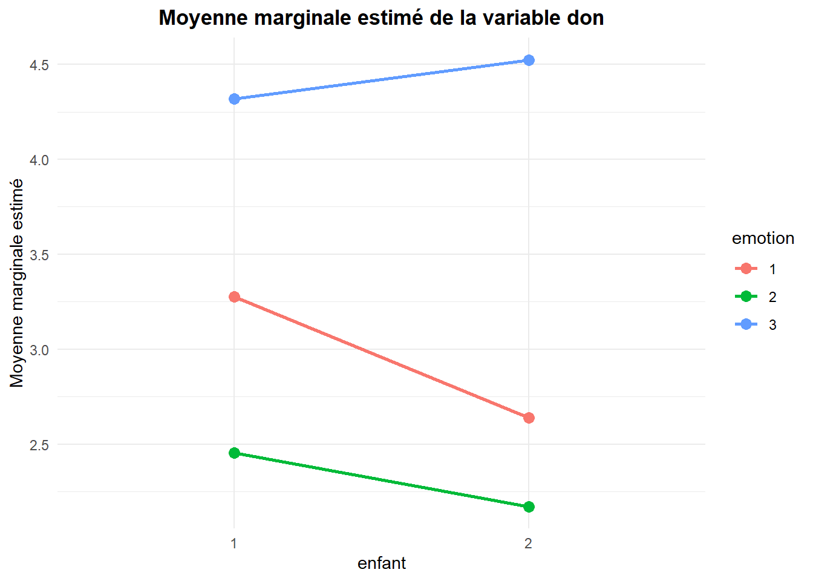
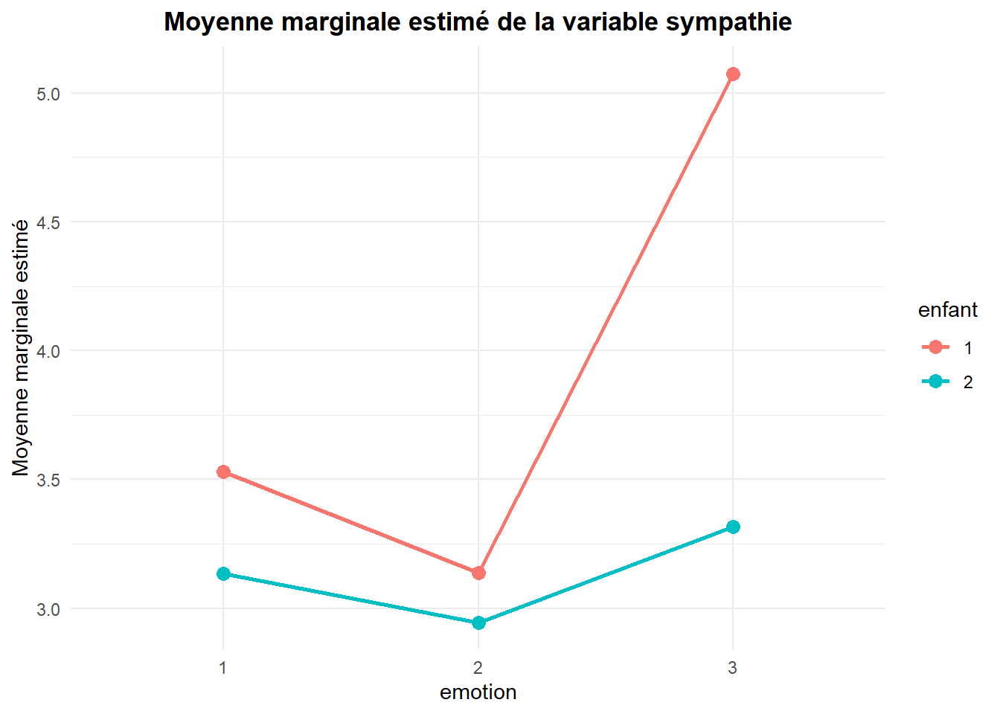

| Nom_Variable | Description |
|---|---|
| Don | Montant d’argent donné par le participant (étude 1), variant entre 1 et 10. |
| Sympathie | Score de sympathie envers l’enfant sur la photo (étude 2), variant entre 1 et 7 |
| Enfant | Identité de l’enfant sur la photo (1 = enfant #1 ; 2 = enfant #2). |
| Émotion | Émotion affichée par l’enfant sur la photo (1 = heureux ; 2 = neutre ; 3 = triste). |
Thème 4: ANOVA à deux facteurs controlés: cellules déséquilibrées
Mise en situation 1
Ce contexte est inspiré de l’article «Small, D. A. et Verrochi, N. M. (2009). “The Face of Need: Facial Emotion Expression on Charity Advertisements .Journal of Marketing Research XLVI, 777-787”. Dans l’article, cinq expériences sont menées afin d’étudier l’impact des photographies montrées dans le but de susciter de la sympathie et d’inciter au don. Nous allons faire deux 2 ANOVA à 2 facteurs contrôlés dans le cas où les cellules ne sont pas équilibrées.
Les données se trouvent dans le fichier « Charity.csv ».
# Définir le répertoire de travail où se trouve le fichier de données
setwd("C:/Users/Fatou/OneDrive - HEC Montréal/PROJET SUPERVISE/Data")
# Importer le jeu de données
charity <- read.csv("Charity.csv", sep = ";", header = TRUE)
#Convertir les variables en facteur et en variable numérique
charity$enfant<- as.factor(charity$enfant)
charity$emotion<- as.factor(charity$emotion)
charity$sympathie <- gsub(",", ".", charity$sympathie)
charity$sympathie <- as.numeric(charity$sympathie)Variable Don
# Charger les bibliothèques nécessaires
library(dplyr)
# Calculer les statistiques descriptives de la variable don
don_stat <- charity %>%
group_by(enfant, emotion) %>%
summarise(
Moyenne = mean(don, na.rm = TRUE),
Ecart_Type = sd(don, na.rm = TRUE),
N = n()
)
print(don_stat)# A tibble: 6 × 5
# Groups: enfant [2]
enfant emotion Moyenne Ecart_Type N
<fct> <fct> <dbl> <dbl> <int>
1 1 1 3.28 2.71 29
2 1 2 2.45 2.52 22
3 1 3 4.32 3.00 25
4 2 1 2.64 2.16 25
5 2 2 2.17 2.49 29
6 2 3 4.52 2.48 21# Charger ggplot2
library(ggplot2)
# Créer le graphique des moyennes marginales
ggplot(don_stat, aes(x = factor(enfant), y = Moyenne, group = factor(emotion), color = factor(emotion))) +
geom_point(size = 3) +
geom_line(size = 1) +
labs(
title = "Moyenne marginale estimé de la variable don",
x = "enfant",
y = "Moyenne marginale estimé",
color = "emotion"
) +
theme_minimal()+
theme(
plot.title = element_text(hjust = 0.5, face = "bold")
)
# Calculer la moyenne des dons par enfant et par émotion
don_moyenne_enfant_emotion <- charity %>%
group_by(enfant, emotion) %>%
summarise(Moyenne = mean(don, na.rm = TRUE))
# Calculer la moyenne des dons par enfant, toutes émotions confondues
don_moyenne_enfant <- charity %>%
group_by(enfant) %>%
summarise(Moyenne = mean(don, na.rm = TRUE)) %>%
mutate(emotion = "Moyenne totale par enfant")
# Calculer la moyenne des dons par émotion, tous enfants confondus
don_moyenne_emotion <- charity %>%
group_by(emotion) %>%
summarise(Moyenne = mean(don, na.rm = TRUE)) %>%
mutate(enfant = "Moyenne totale par émotion")
# Combiner les trois tableaux ensemble
don_moyenne_final <- bind_rows(don_moyenne_enfant_emotion, don_moyenne_enfant, don_moyenne_emotion)
don_moyenne_final# A tibble: 11 × 3
# Groups: enfant [3]
enfant emotion Moyenne
<chr> <chr> <dbl>
1 1 1 3.28
2 1 2 2.45
3 1 3 4.32
4 2 1 2.64
5 2 2 2.17
6 2 3 4.52
7 1 Moyenne totale par enfant 3.38
8 2 Moyenne totale par enfant 2.99
9 Moyenne totale par émotion 1 2.98
10 Moyenne totale par émotion 2 2.29
11 Moyenne totale par émotion 3 4.41Variable sympathie
# Calculer les statistiques descriptives de la variable don
sympathie_stat <- charity %>%
group_by(enfant, emotion) %>%
summarise(
Moyenne = mean(sympathie, na.rm = TRUE),
Ecart_Type = sd(sympathie, na.rm = TRUE),
N = n()
)
print(sympathie_stat)# A tibble: 6 × 5
# Groups: enfant [2]
enfant emotion Moyenne Ecart_Type N
<fct> <fct> <dbl> <dbl> <int>
1 1 1 3.53 1.44 29
2 1 2 3.14 1.39 22
3 1 3 5.08 1.40 25
4 2 1 3.14 1.29 25
5 2 2 2.95 1.41 29
6 2 3 3.32 1.36 21# Créer le graphique des moyennes marginales
ggplot(sympathie_stat, aes(x = factor(emotion), y = Moyenne, group = factor(enfant), color = factor(enfant))) +
geom_point(size = 3) +
geom_line(size = 1) +
labs(
title = "Moyenne marginale estimé de la variable sympathie",
x = "emotion",
y = "Moyenne marginale estimé",
color = "enfant"
) +
theme_minimal()+
theme(
plot.title = element_text(hjust = 0.5, face = "bold")
)
# Calculer la moyenne de sympathie par enfant et par émotion
sympathie_moyenne_enfant_emotion <- charity %>%
group_by(enfant, emotion) %>%
summarise(Moyenne = mean(sympathie, na.rm = TRUE), .groups = "drop")
# Calculer la moyenne de sympathie par enfant
sympathie_moyenne_enfant <- charity %>%
group_by(enfant) %>%
summarise(Moyenne = mean(sympathie, na.rm = TRUE), .groups = "drop") %>%
mutate(emotion = "Moyenne totale par enfant")
# Calculer la moyenne de sympathie par émotion
sympathie_moyenne_emotion <- charity %>%
group_by(emotion) %>%
summarise(Moyenne = mean(sympathie, na.rm = TRUE), .groups = "drop") %>%
mutate(enfant = "Moyenne totale par émotion")
# Combiner les trois tableaux ensemble
sympathie_moyenne_final <- bind_rows(sympathie_moyenne_enfant_emotion,
sympathie_moyenne_enfant,
sympathie_moyenne_emotion)
# Afficher le tableau final
print(sympathie_moyenne_final)# A tibble: 11 × 3
enfant emotion Moyenne
<chr> <chr> <dbl>
1 1 1 3.53
2 1 2 3.14
3 1 3 5.08
4 2 1 3.14
5 2 2 2.95
6 2 3 3.32
7 1 Moyenne totale par enfant 3.93
8 2 Moyenne totale par enfant 3.11
9 Moyenne totale par émotion 1 3.35
10 Moyenne totale par émotion 2 3.03
11 Moyenne totale par émotion 3 4.27Décomposition de la variabilité totale: ANOVA à 2 facteurs avec cellules déséquilibrées
Il y a plusieurs manières de décomposer la variabilité totale observée (mesurée par des sommes de carrés).
Dans le cas de cellules déséquilibrées, la moyenne pondérée des moyennes des cellules pour un niveau donné d’un facteur n’est pas nécessairement égale à la moyenne marginale du même niveau du facteur.
La plupart des logiciels offrent 4 possibilités pour la décomposition de la somme des carrés totale : type I, type II, type III et type IV. Ces 4 méthodes donnent des résultats identiques lorsque les cellules sont équilibrées, mais ce n’est plus vrai dans le cas de cellules déséquilibrées.
Le but ici est de tester des hypothèses concernant des différences entre des moyennes de « populations »; il faut donc utiliser les moyennes marginales (et non les moyennes pondérées). On choisit généralement les sommes de carrés de type III .
Analyse de la variable Don
library(car)
options(contrasts = c("contr.sum", "contr.poly"))
# Effectuer l'ANOVA avec interaction entre les variables enfant et émotion
anova_enfant_emotion <- aov(don ~ enfant * emotion, data = charity)
#Anova de type 3
anova_enfant_emotion_resultat <- Anova(anova_enfant_emotion, type = "III")
anova_enfant_emotion_resultatAnova Table (Type III tests)
Response: don
Sum Sq Df F value Pr(>F)
(Intercept) 1552.81 1 233.6090 < 2.2e-16 ***
enfant 2.11 1 0.3170 0.5742654
emotion 110.62 2 8.3208 0.0003794 ***
enfant:emotion 4.36 2 0.3278 0.7210305
Residuals 963.82 145
---
Signif. codes: 0 '***' 0.001 '**' 0.01 '*' 0.05 '.' 0.1 ' ' 1L’interaction entre les deux facteurs n’est pas significative (p-value = 0.721). On peut donc procéder à l’analyse des effets globaux.
Analyse des effets globaux (variable Don)
Pour le facteur « enfant »
Soit µ𝑖 le don marginal pour l’enfant #i. On veut tester
𝐻0 : µ1 = µ2
𝐻1 : µ1 ≠ µ2
Le facteur « enfant » n’est pas globalement significatif pour expliquer le don.
Pour le facteur « émotion »
Soit le µ𝑖 don moyen marginal pour l’émotion i. On teste
𝐻0 : µ1 = µ2=𝜇3
𝐻1 : Au moins deux moyennes sont différentes.
L’effet global du facteur « emotion » est significatif (p-value=0%).
Questions
Présentez les tests à effectuer pour le facteur « émotion ».
Interprétez les résultats dans le contexte du problème.
library(emmeans)
# Effectuer un test ANOVA à un facteur (effet de l’émotion sur le don)
anova_don <- aov(don ~ emotion, data = charity)
# Calculer les moyennes marginales estimées pour chaque niveau d’émotion
emmeans_don <- emmeans(anova_don, ~ emotion)
# Afficher les résultats
print(emmeans_don) emotion emmean SE df lower.CL upper.CL
1 2.98 0.349 148 2.29 3.67
2 2.29 0.359 148 1.59 3.00
3 4.41 0.378 148 3.67 5.16
Confidence level used: 0.95 # Comparaisons par paires des moyennes
pairwise_don <- pairs(emmeans_don, adjust = "none")
# Afficher les résultats avec intervalles de confiance
summary(pairwise_don, infer = c(TRUE, TRUE)) contrast estimate SE df lower.CL upper.CL t.ratio p.value
emotion1 - emotion2 0.687 0.500 148 -0.301 1.676 1.375 0.1714
emotion1 - emotion3 -1.432 0.514 148 -2.447 -0.416 -2.786 0.0060
emotion2 - emotion3 -2.119 0.521 148 -3.148 -1.090 -4.069 0.0001
Confidence level used: 0.95 Résultats:
Lorsque l’émotion affichée est la tristesse, la moyenne des dons est significativement différente des deux autres types d’émotion (joie et neutralité).
En particulier la tristesse suscite un don moyen supérieur de $0.416 à $2.447 à la joie et un don moyen supérieur de $1.090 à $3.148 à la neutralité au niveau 95%.
Analyse de la variable Sympathie
# Effectuer une ANOVA avec interaction entre enfant et émotion
anova_enfant_emotion_sympathie <- aov(sympathie ~ enfant * emotion, data = charity)
# Obtenir les résultats de l’ANOVA de type III
anova_enfant_emotion_sympathie_resultat <- Anova(anova_enfant_emotion_sympathie, type = "III")
anova_enfant_emotion_sympathie_resultatAnova Table (Type III tests)
Response: sympathie
Sum Sq Df F value Pr(>F)
(Intercept) 1846.76 1 960.4518 < 2.2e-16 ***
enfant 22.73 1 11.8218 0.0007644 ***
emotion 34.14 2 8.8773 0.0002307 ***
enfant:emotion 17.18 2 4.4673 0.0131015 *
Residuals 278.81 145
---
Signif. codes: 0 '***' 0.001 '**' 0.01 '*' 0.05 '.' 0.1 ' ' 1L’interaction est statistiquement significative (p-value = 0.013) au niveau 0.05.
On doit donc évaluer les effets simples des facteurs.
Analyse des effets simples des facteurs (variable Sympathie)
Le facteur Enfant comporte 2 niveaux et le facteur émotion comporte 3 niveaux.
On va donc créer 6 groupes (2*3):
# Créer la variable "groupe"
charity$groupe <- ifelse(charity$emotion == 1 & charity$enfant == 1, 1,
ifelse(charity$emotion == 1 & charity$enfant == 2, 2,
ifelse(charity$emotion == 2 & charity$enfant == 1, 3,
ifelse(charity$emotion == 2 & charity$enfant == 2, 4,
ifelse(charity$emotion == 3 & charity$enfant == 1, 5, 6)))))
charity$groupe<-as.factor(charity$groupe)Questions
Quelles sont les hypothèses d’intérêt pour l’analyse des effets simples du facteur « enfant » (2 niveaux) sur la sympathie moyenne ?
Quelles sont les hypothèses d’intérêt pour l’analyse des effets simples du facteur « émotion » (3 niveaux) sur sympathie moyenne ?
Effets simples pour le facteur « enfant »
Lorsque « émotion = 1 » heureux
𝐻0 : µ1 = µ2 vs. 𝐻1 : µ1 ≠ µ2
Lorsque « émotion = 2 » neutre
𝐻0 : µ3 = µ4 vs. 𝐻1 : µ3 ≠ µ4
Lorsque « émotion = 3 » triste
𝐻0 : µ5 = µ6 vs. 𝐻1 : µ5 ≠ µ6
Effets simples pour le facteur « émotion »
Chez l’enfant #1: Comparaison 1,3 et 5
𝐻0 : µ1 = µ3 = µ5 vs. 𝐻1 : Au moins deux moyennes sont différentes.
Chez l’enfant #2: Comparaison 2,4 et 6
𝐻0 : µ2 = µ4 = µ6 vs. 𝐻1 : Au moins deux moyennes sont différentes.
Comparaison des moyennes
On transforme le modèle d’ANOVA à 2 facteurs à un modèle d’ANOVA à 1 facteur et on poursuit l’analyse en comparant adéquatement les groupes conformément aux effets à évaluer et non de façon arbitraire.
Effets simples pour le facteur ‘’enfant’’
# Effectuer une ANOVA à un facteur
anova_sympathie <- aov(sympathie ~ groupe, data = charity)
# Comparaisons par paires des moyennes
pairwise_sympathie <- pairs(emmeans(anova_sympathie, ~ groupe), adjust = "none")
# Afficher les résultats
summary(pairwise_sympathie,infe=TRUE) contrast estimate SE df lower.CL upper.CL t.ratio p.value
groupe1 - groupe2 0.39578 0.378 145 -0.352 1.144 1.046 0.2974
groupe1 - groupe3 0.39411 0.392 145 -0.381 1.169 1.005 0.3165
groupe1 - groupe4 0.58586 0.364 145 -0.134 1.306 1.609 0.1098
groupe1 - groupe5 -1.54382 0.378 145 -2.292 -0.796 -4.079 0.0001
groupe1 - groupe6 0.21424 0.397 145 -0.571 1.000 0.539 0.5906
groupe2 - groupe3 -0.00167 0.405 145 -0.803 0.799 -0.004 0.9967
groupe2 - groupe4 0.19008 0.378 145 -0.558 0.938 0.502 0.6162
groupe2 - groupe5 -1.93960 0.392 145 -2.715 -1.164 -4.945 <.0001
groupe2 - groupe6 -0.18154 0.410 145 -0.993 0.630 -0.442 0.6589
groupe3 - groupe4 0.19176 0.392 145 -0.583 0.967 0.489 0.6255
groupe3 - groupe5 -1.93793 0.405 145 -2.739 -1.137 -4.781 <.0001
groupe3 - groupe6 -0.17987 0.423 145 -1.016 0.656 -0.425 0.6713
groupe4 - groupe5 -2.12968 0.378 145 -2.878 -1.382 -5.628 <.0001
groupe4 - groupe6 -0.37163 0.397 145 -1.157 0.414 -0.935 0.3512
groupe5 - groupe6 1.75806 0.410 145 0.947 2.569 4.283 <.0001
Confidence level used: 0.95 Conclusion : Ainsi, les enfants #1 et #2 suscite des sympathies moyennes différente seulement lorsqu’ils affichent la tristesse. Dans ce cas, la sympathie moyenne est de 0.94 à 2.56 points plus élevée (Intervalle de confiance) chez l’enfant #1 que chez l’enfant #2 au niveau 95%.
Effet simples pour le facteur ‘’émotion’’
Pour tester l’égalité des moyennes des trois niveaux du facteur émotion à l’intérieur de chaque niveau du facteur enfant, on doit utiliser un test ANOVA avec contrastes.
Il faut d’abord calculer manuellement les contrastes et ensuite les appliquer à la variable avant d’exécuter l’ANOVA.
# Ajuster un modèle linéaire avec interaction entre émotion et enfant
modele <- lm(sympathie ~ emotion * enfant, data = charity)
# Estimer les moyennes marginales pour toutes les combinaisons Émotion × Enfant
e_moy_mar <- emmeans(modele, ~ emotion * enfant)
# Afficher les résultats
e_moy_mar emotion enfant emmean SE df lower.CL upper.CL
1 1 3.53 0.257 145 3.02 4.04
2 1 3.14 0.296 145 2.55 3.72
3 1 5.08 0.277 145 4.53 5.62
1 2 3.14 0.277 145 2.59 3.68
2 2 2.95 0.257 145 2.44 3.45
3 2 3.32 0.303 145 2.72 3.92
Confidence level used: 0.95 #contrast 1 : Heureux - Triste pour Enfant 1 et Enfant 2
contrast1 <- contrast(e_moy_mar, method = list("Heureux_vs_Triste" = c(1, 0, -1, 1, 0, -1)))
#contrast 2 : Neutre - Triste pour Enfant 1 et Enfant 2
contrast2 <- contrast(e_moy_mar, method = list("Neutre_vs_Triste" = c(0, 1, -1, 0, 1, -1)))
#Affichage des résultats
summary(contrast1) contrast estimate SE df t.ratio p.value
Heureux_vs_Triste -1.73 0.558 145 -3.090 0.0024summary(contrast2) contrast estimate SE df t.ratio p.value
Neutre_vs_Triste -2.31 0.568 145 -4.069 0.0001Custom Hypothesis Test 1
# Filtrer les données pour enfant == 1
charity_enfant1 <- subset(charity, enfant == 1)
# Ajuster un modèle linéaire
mod_e1 <- lm(sympathie ~ emotion, data = charity_enfant1)
# Effectuer une ANOVA
anova_enfant1 <- aov(mod_e1)
summary(anova_enfant1) Df Sum Sq Mean Sq F value Pr(>F)
emotion 2 51.22 25.609 12.81 1.7e-05 ***
Residuals 73 145.93 1.999
---
Signif. codes: 0 '***' 0.001 '**' 0.01 '*' 0.05 '.' 0.1 ' ' 1# Calculer les moyennes marginales estimées
emm_e1 <- emmeans(mod_e1, ~ emotion)
# Appliquer les contrastes personnalisés
con1 <- contrast(emm_e1, method = list(
"Heureux_vs_Triste" = c(1, 0, -1),
"Neutre_vs_Triste" = c(0, 1, -1),
"Heureux_vs_Neutre" = c(1, -1, 0)
))
# Intervalle de confiance :
summary(con1, infer = c(TRUE, TRUE)) contrast estimate SE df lower.CL upper.CL t.ratio p.value
Heureux_vs_Triste -1.544 0.386 73 -2.313 -0.775 -4.001 0.0001
Neutre_vs_Triste -1.938 0.413 73 -2.762 -1.114 -4.689 <.0001
Heureux_vs_Neutre 0.394 0.400 73 -0.403 1.191 0.986 0.3274
Confidence level used: 0.95 Custom Hypothesis Test 2
# Filtrer les données pour enfant == 2
charity_enfant2 <- subset(charity, enfant == 2)
# Ajuster un modèle linéaire
mod_e2 <- lm(sympathie ~ emotion, data = charity_enfant2)
# Effectuer une ANOVA
anova_enfant2 <- aov(mod_e2)
summary(anova_enfant2) Df Sum Sq Mean Sq F value Pr(>F)
emotion 2 1.7 0.8507 0.461 0.633
Residuals 72 132.9 1.8456 # Calculer les moyennes marginales estimées
emm_e2 <- emmeans(mod_e2, ~ emotion)
# Appliquer les contrastes personnalisés
con2 <- contrast(emm_e2, method = list(
"Heureux_vs_Triste" = c(1, 0, -1),
"Neutre_vs_Triste" = c(0, 1, -1),
"Heureux_vs_Neutre" = c(1, -1, 0)
))
# Intervalle de confiance :
summary(con2, infer = c(TRUE, TRUE)) contrast estimate SE df lower.CL upper.CL t.ratio p.value
Heureux_vs_Triste -0.182 0.402 72 -0.983 0.620 -0.451 0.6530
Neutre_vs_Triste -0.372 0.389 72 -1.148 0.404 -0.955 0.3429
Heureux_vs_Neutre 0.190 0.371 72 -0.549 0.929 0.513 0.6097
Confidence level used: 0.95 Conclusion :
L’émotion n’est pas significative pour expliquer la sympathie que chez l’enfant #1.
Lorsque l’enfant affiche une tristesse, la sympathie moyenne est significativement plus élevée comparativement aux autres émotions (voir tableau de LSD).
La tristesse chez l’enfant #1 suscite une sympathie moyenne plus élevée de 1.11 à 2.76 points que la neutralité au niveau 95%.
Mise en situation 2
Un concessionnaire automobile souhaite étudier la consommation des véhicules en carburant selon la marque du véhicule et le type de conduite. Il recueille des données sur un échantillon de 206 véhicules contenues dans le fichier « consommation.sav ».
La variable dépendante étudiée est:
Cons: la consommation en carburant en litres sur un trajet de 100 km.
Les deux facteurs contrôlés sont:
Conduite : le type de conduite = 1 si la conduite est jugée économique, 2 sinon. Marque : la marque de voiture= 1, 2 ou 3 (des voitures de la même catégorie).
Question
Analysez, selon ce qui est pertinent, les effets globaux ou les effets simples des facteurs conduite et marque sur la consommation en carburant.